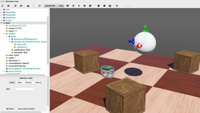
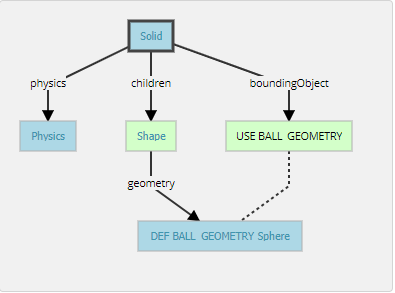
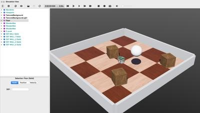

翻譯 <<
Previous W17 2a
Geometries
To define the ball, we used the Sphere node in two different contexts: for the graphical representation (children) and to define the physical bounds (boundingObject). All Geometry nodes (such as the Sphere node) can be used in a graphical context. However, only a subset of them can be used in a physical context. The nodes chart diagram indicates which nodes are supported in each context.
We are now going to reduce the size of the Sphere and increase its graphical quality by increasing the number of triangles used to represent it.
幾何形狀
為了定義球，我們在兩個不同的上下文中使用了Sphere節點：用於圖形表示（children）和定義物理邊界（boundingObject）。 所有Geometry節點（例如Sphere節點）都可以在圖形上下文中使用。 但是，它們的子集只能在物理環境中使用。 節點圖表顯示了每個上下文中支持哪些節點。
現在，我們將通過增加用來表示球體三角形的數量來減小球體的大小並提高其圖形質量。
Hands-on #5: For each Sphere node defining the ball, set its radius field to 0.05 and its subdivision field to 2. Refer to the Reference Manual to understand what the subdivision field stands for.
動手操作5：對於定義球的每個Sphere節點，將其半徑字段設置為0.05，並將其細分字段設置為2。請參閱《參考手冊》以了解細分字段的含義。
DEF-USE Mechanism
The DEF-USE mechanism allows to define a node in one place and to reuse that definition elsewhere in the scene tree. This is useful to avoid the duplication of identical nodes in world files. Moreover, it also allows users to modify several objects at the same time. Here is how it works: first a node is labeled with a DEF string. Then copies of this node can be reused elsewhere with the USE keyword. Only the fields of the DEF node can be edited, the fields of the USE inherit from the DEF node and cannot be changed. This mechanism is dependent on the order of the nodes in the world file. A DEF node should be defined before any corresponding USE node.
The two Sphere definitions that we have used earlier to define the ball, are redundant. We will now merge these two Spheres into only once using the DEF-USE mechanism.
DEF-USE機制
DEF-USE機制允許在一個位置定義節點，並在場景樹的其他位置重用該定義。 這對於避免在世界文件中復制相同節點很有用。 此外，它還允許用戶同時修改多個對象。 它是這樣工作的：首先用DEF字符串標記節點。 然後，可以使用USE關鍵字將該節點的副本重用於其他地方。 只能編輯DEF節點的字段，USE的字段從DEF節點繼承，並且不能更改。 該機制取決於world文件中節點的順序。 應在任何相應的USE節點之前定義DEF節點。
Hands-on #6: Select the first Sphere node (the child of the Shape) in the scene tree view. The field editor of the scene tree view allows you to enter the DEF string.
Enter BALL_GEOMETRY in this field.
Select the boundingObject field (containing the second Sphere node), and empty it by right clicking the field in the scene tree and choosing the Delete entry in the context menu that pops up.
Then, select the boundingObject field and click on the Add button, and select the USE / BALL_GEOMETRY in the dialog box.
The result is shown in this figure.
動手操作6：在場景樹視圖中選擇第一個Sphere節點（Shape的子級）。 場景樹視圖的字段編輯器允許您輸入DEF字符串。
在此字段中輸入BALL_GEOMETRY。
選擇boundingObject字段（包含第二個Sphere節點），並通過右鍵單擊場景樹中的字段並在彈出的上下文菜單中選擇“刪除”條目來將其清空。
然後，選擇boundingObject字段，然後單擊“添加”按鈕，然後在對話框中選擇USE / BALL_GEOMETRY。
結果如圖所示。
Now, changing the radius field of the first Sphere node also modifies its boundingObject.
For convenience, the boundingObject field accepts also the Shape node (rather than the Sphere node directly). It would be also possible to use the same DEF-USE mechanism at the Shape level as shown in this figure. For now the greatest benefit is being able to also use this Shape directly for graphical purposes. Later this mechanism will turn out to be very useful for some sensors.
.現在，更改第一個Sphere節點的半徑字段也會修改其boundingObject。
為了方便起見，boundingObject字段還接受Shape節點（而不是直接接受Sphere節點）。 如圖所示，也可以在Shape級別使用相同的DEF-USE機制。 到目前為止，最大的好處就是也可以直接將此Shape用於圖形目的。 後來，對於某些傳感器，該機制將變得非常有用。

DEF-USE mechanism on the Sphere node called BALL_GEOMETRY
Sphere節點上的DEF-USE機制稱為BALL_GEOMETRY。

DEF-USE mechanism applied on the Shape node of a Solid.
在實體的“形狀”節點上應用的DEF-USE機制。
Hands-on #7: Create a second ball with the same parameters but using the Shape node (rather than the Sphere node directly) for the DEF-USE mechanism.
動手練習7：使用DEF-USE機制的Shape節點（而不是直接使用Sphere節點）創建具有相同參數的第二個球。
Add Walls
In order to verify your progression, implement by yourself four walls to surround the environment. The walls have to be defined statically to the environment. To understand the difference between static and dynamic, let's take a defined object (the ball) above the ground. If the Physics node is NULL, it will remain frozen in the air during the simulation (static case). If the physics field contains a Physics nodes, it will fall under the effect of gravity (dynamic case).
Use as much as possible the DEF-USE mechanism at the Shape level rather than at the Geometry level. Indeed it's more convenient to add an intermediate Shape node in the boundingObject field of the Solid node. The best Geometry primitive to implement the walls is the Box node. Only one Shape has to be defined for all the walls. The expected result is shown in this figure.
添加牆
為了驗證您的進度，請自己實施四堵牆以包圍環境。 必須根據環境靜態定義牆壁。 要了解靜態和動態之間的區別，我們將定義的物體（球）放在地面上方。 如果“物理”節點為NULL，則在仿真過程中它將保持凍結狀態（靜態情況）。 如果物理場包含“物理”節點，則它將受重力作用（動態情況）。
在Shape級別而不是Geometry級別，盡可能使用DEF-USE機制。 實際上，在Solid節點的boundingObject字段中添加中間Shape節點更為方便。 實現牆的最佳幾何原語是Box節點。 所有牆壁僅需定義一個形狀。 預期結果如圖所示。
Hands-on #8: Add four walls without physics and using only one definition of the Shape node.
實際操作＃8：添加四面牆，無需物理操作，僅使用“形狀”節點來定義。
Solution: World File
To compare your world with the solution, go to your files and find the folder named "my_first_simulation" created in Tutorial 1, then go to the "worlds" folder and open with a text editor the right world. This solution as the others is located in the solution directory.
解決方案：世界文件
要將您的world與解決方案進行比較，請轉到文件，找到在教程1中創建的名為“ my_first_simulation”的文件夾，然後轉到“ worlds”文件夾，並使用文本編輯器打開正確的world。 與其他解決方案一樣，該解決方案位於解決方案目錄中。

The simulation state at the end of this second tutorial.
在第二篇教程結尾處的仿真狀態。
Efficiency
The simulation of rigid bodies is computationally expensive. The simulation speed can be increased by minimizing the number of bounding objects, minimizing the constraints between them (more information about the constraints in the next tutorials), and maximizing the WorldInfo.basicTimeStep field. On each simulation, a trade-off has to be found between simulation speed and realism.
效率
剛體的模擬在計算上是昂貴的。 可以通過以下方法來提高仿真速度：最小化邊界對象的數量，最小化邊界對象之間的約束（有關下一個教程的約束的更多信息），並最大化WorldInfo.basicTimeStep字段。 在每個模擬中，必須在模擬速度和真實性之間找到一個折衷。
Conclusion
At the end of this tutorial, you are able to create simple environments based on rigid bodies. You are able to add nodes from the scene tree view and to modify their fields. You have become acquainted with the Solid, Physics, Shape, Sphere and Box nodes. You also saw the DEF-USE mechanism that allows to reduce node redundancy of the scene tree.
結論
在本教程的最後，您將能夠基於剛體創建簡單的環境。 您可以從場景樹視圖添加節點並修改其字段。 您已經熟悉了“實體”，“物理”，“形狀”，“球體”和“盒子”節點。 您還看到了DEF-USE機制，該機制可減少場景樹的節點冗餘。
翻譯 <<
Previous